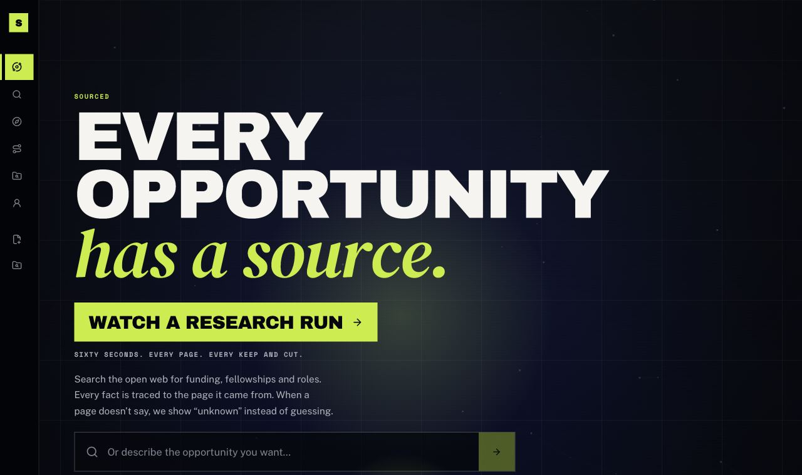
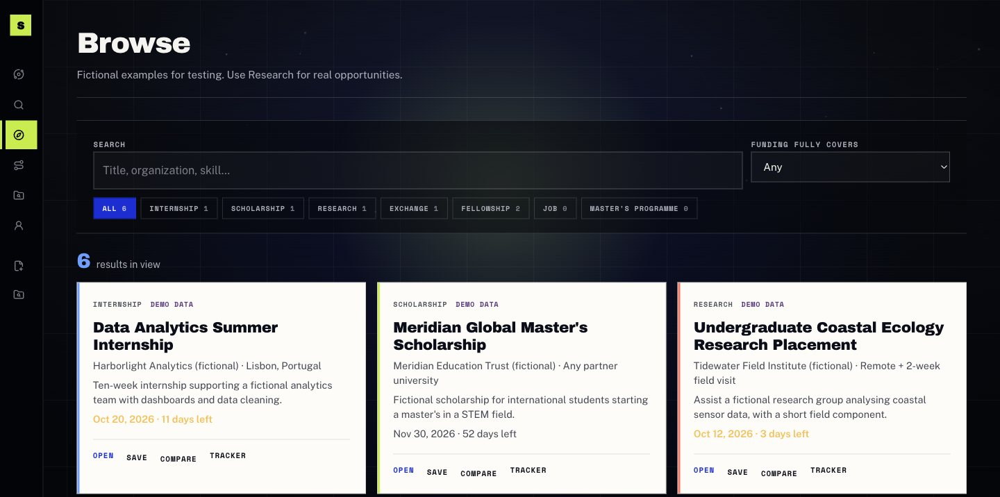

Hackathon / 3–4 October 2026
Sourced.
Hackathon project. A two-day prototype for finding student opportunities, reading what a page actually says, and keeping the application work in one place.



01 / Context
A startup-track build, over two days.
I took part in the Hong Kong AI Summit 2026 BUILD ACROSS Hackathon on 3 and 4 October, in the Startup Track. The event was organized by Erasmus AI Society and MAIN Maastricht AI & Tech Network, and hosted by HKUST MBA and the HKUST Entrepreneurship Center. It was powered by Kimi and Lovable, with sponsors including Microsoft, Deloitte, Capco, bolttech, WeLab Bank, and CLP.
I conceived Sourced there: a place for students to discover internships, scholarships, research placements, fellowships, and exchange programs, understand eligibility, and organize applications. I led a five-person team and split the work across engineering, AI, data, and finance.
02 / Problem
The listing is not the hard part.
A student can already open a dozen tabs. The harder part is knowing whether a page states a deadline, whether funding is actually described, and which application is waiting on a document. Guessing those gaps makes the tool look more certain than the source.
Sourced is built around that constraint. A retrieved page keeps its URL and retrieval time. Anything the page does not say stays unknown. Eligibility is a reading of listed requirements, not an admission decision. Demo opportunities are fictional and say so.
03 / My role
Direction, the foundation, and the path through the product.
I set the product direction, set up the GitHub repository and the shared Lovable project, added teammates, answered their requests, and coordinated integration.
I also built the app foundation and worked on the React and TypeScript experience: guided opportunity search, a persistent comparison, application action plans, and browser-local affordability scenarios. The affordability notes are the student’s own assumptions. They do not overwrite funding facts that came from a source.
04 / What ships in the repo
Implemented behavior, read from the current code.
The app is a TanStack Start project. Routes live in
src/routes, shared contracts in
src/domain/types.ts, and server-only search and
extraction under src/lib. Supabase handles
account-backed data. Vitest covers mapping, eligibility, finance,
and related rules.
In the product now
- Live search through Firecrawl, with source URL, retrieval time, and unknown fields left unknown.
- A bounded research mode that plans queries and keeps or rejects extracted pages. It does not invent listings.
- A labelled browse set of fictional opportunities.
- A Passport the student enters or reviews. Uploaded documents can suggest fields; nothing is confirmed until the student says so.
- Comparison, an application plan, and My Journey: statuses, notes, and CSV import or export in this browser.
- An account-backed Tracker for applications, coffee chats, follow-ups, and resources, separate from My Journey.
Still out of scope
- Gmail is not connected. The Tracker says scanning is unavailable and does not change application status.
- Demo cards have no real apply links.
- Signing in does not migrate browser-local Journey items into the Tracker.
- Live search, document extraction, and other AI features need server credentials. Without them, the app says so.
- There is no public deployment linked from the repository.
05 / Decisions
Honesty was an interface constraint.
Unknown never passes
Eligibility and search filters treat a missing requirement as unknown. A filter cannot be satisfied by a value the page did not state. The brief shows that state instead of a score.
Don’t stitch a board page into one job
Live search reads pages on the server. Aggregate and job-board URLs are rejected rather than combined into a single listing, because an early search had mixed facts from different postings on the same page. The trade-off is fewer results.
Two trackers, on purpose
My Journey stays in browser storage. The Tracker uses Supabase. A local save does not become an account record by itself, so clearing site data and signing in are different events.
06 / Limits
A hackathon system that is still moving.
This is a prototype from a two-day build, and the repository has continued to change since the event. Search quality depends on the page Firecrawl reads. Rate limits and the short search cache are per server instance. Board pages are skipped instead of followed to the original posting.
The evidence for the build is the repository: the product boundary, the screens, and the tests around unknown data.